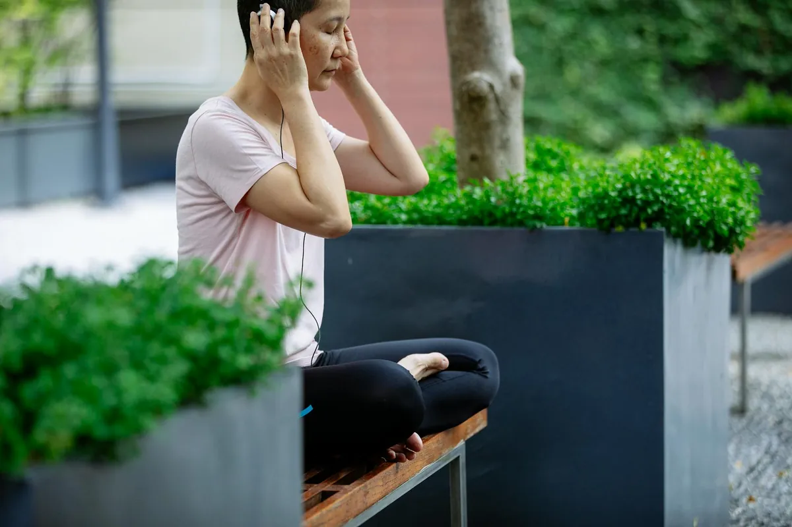

Master Stress Management: Top Mindfulness Techniques for a Calmer You
Key takeaways
- I remember one particularly rough Tuesday.
- My inbox was overflowing, a big project deadline loomed, and my kiddo had a fever.
- Track what feels sustainable and adjust gradually.
I remember one particularly rough Tuesday. My inbox was overflowing, a big project deadline loomed, and my kiddo had a fever. I felt that familiar clench in my chest, the one that whispers, "You're not handling this." It was a moment where I realized I desperately needed to Master Stress Management: Top Mindfulness Techniques for a Calmer You. I used to think mindfulness was just for yogis or people with way more free time than I had. Turns out, that's not true at all. It's about small, consistent actions that can make a huge difference.
The science is pretty clear: chronic stress wrecks our bodies and minds. It messes with our sleep, our digestion, and even our immune systems. But the good news? Our brains are surprisingly adaptable. We can actually train them to react differently to stressors. That's where these practical mindfulness techniques come in. They aren't about emptying your mind; they're about noticing what's going on without getting completely swept away by it.
One of my go-to exercises is the 5-4-3-2-1 grounding technique. When I feel that panic rising, I stop and name five things I can see, four things I can touch, three things I can hear, two things I can smell, and one thing I can taste. It sounds simple, but it pulls me right out of my head and into the present moment. It’s a quick way to interrupt the stress cycle and regain a sense of control. This is a cornerstone of effective stress management.
The 2-Minute Win
Right now, take a deep breath. Inhale slowly through your nose, feeling your belly expand. Exhale even slower through your mouth. Do this three times. Notice how your body feels even after just a few breaths.
Another powerful tool is mindful breathing. I used to think 'just breathe' was useless advice, but it's actually foundational. Try focusing on the sensation of the air entering and leaving your nostrils. Notice its temperature. Feel your chest or abdomen rise and fall. When your mind wanders (and it will!), gently guide your attention back to your breath. This practice builds your ability to focus and observe without judgment, a key skill for mastering stress management.
I've also found immense value in body scans. This involves bringing gentle awareness to different parts of your body, from your toes to the top of your head, noticing any sensations without trying to change them. It helps release tension I didn't even know I was holding. It’s a fantastic way to reconnect with yourself, especially after a long day. This is a great complement to any related healthy tip you might be following.
Scheduling these practices might sound counterintuitive when you're already swamped, but think of it as preventative maintenance for your mental health. Even five minutes can make a difference. I often do a quick body scan while waiting for my coffee to brew or a short breathing exercise before a stressful meeting. Consistency is more important than duration. This is where you can find another practical guide to help you build these habits.
Don't aim for perfect mindfulness sessions. Aim for present moments. If you get distracted 100 times, just bring yourself back 101 times. That's the real practice.
Mindful walking is another gem. Instead of rushing from point A to point B, pay attention to the physical sensations of walking: the feeling of your feet on the ground, the movement of your legs, the rhythm of your steps. Notice the sights and sounds around you. It transforms a mundane activity into a moment of calm. This is a similar wellness insight that can shift your perspective.
Another technique I’ve embraced is mindful eating. Next time you eat, try to really savor your food. Notice the colors, textures, and smells. Chew slowly and pay attention to the taste. This not only enhances your enjoyment of food but also helps you become more aware of your body's hunger and fullness cues, which can be a real game-changer. This practice really helps you stay consistent with this kind of self-care.
The goal isn't to eliminate stress entirely – that's impossible. It's about building resilience and developing healthier coping mechanisms. By integrating these simple, science-backed mindfulness techniques into your daily life, you can effectively Master Stress Management: Top Mindfulness Techniques for a Calmer You. You'll start to notice a shift, a greater sense of peace even amidst the chaos. Remember, it's a journey, not a destination. Keep exploring more mental-wellness guides to support your path.
Educational only — not medical advice.
Recommended Reading
- Master Your Stress: Simple Mindfulness Techniques for a Calmer You
- Daily Mindfulness for Stress Relief: Simple Practices for a Calmer You
- Mindfulness Meditation for Daily Stress Relief: Simple Techniques for a Calmer You
More in mental-wellness

mental-wellnessDaily Mindfulness for Stress Relief: Simple Practices for a Calmer You
Discover simple daily mindfulness practices for stress relief designed for busy Americans. Learn how to cultivate calm a
Read article →Unlock Creatine's Brain and Energy Secrets: It's Not Just for the Gym!
Unlock Creatine's Brain and Energy Secrets: It's Not Just for the Gym! Discover how creatine can boost your daily energy
Read article →